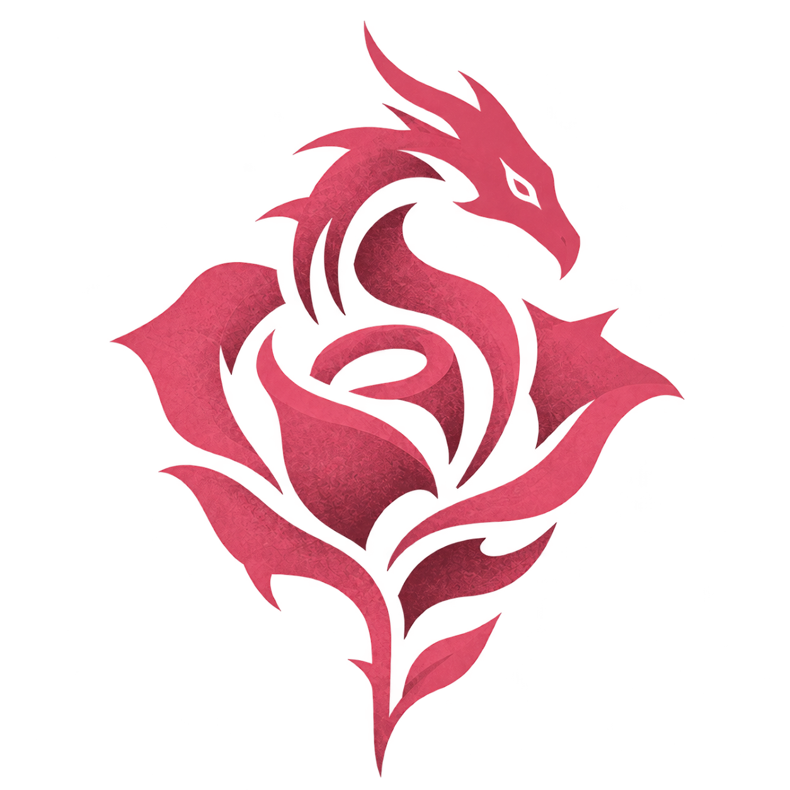

Blackrose
Conversations
Models
Qwen 3.6
Workspace
Downloads outputs
Library
Local sources
Skills
Manage
New chat
Ctrl N
Blackrose
Starting…
Message
@ files
$ skills
/ commands
Drop images or documents
Ctrl Enter
sends
·
Enter
adds a line
Sources
Reasoning
Default
Retry
Send
Context — / —
— tokens/s
Sources
Local knowledge
Web search
Trusted sites
Manage ›
Memory
Citation rigor
Off
Advisory
Balanced
Strict